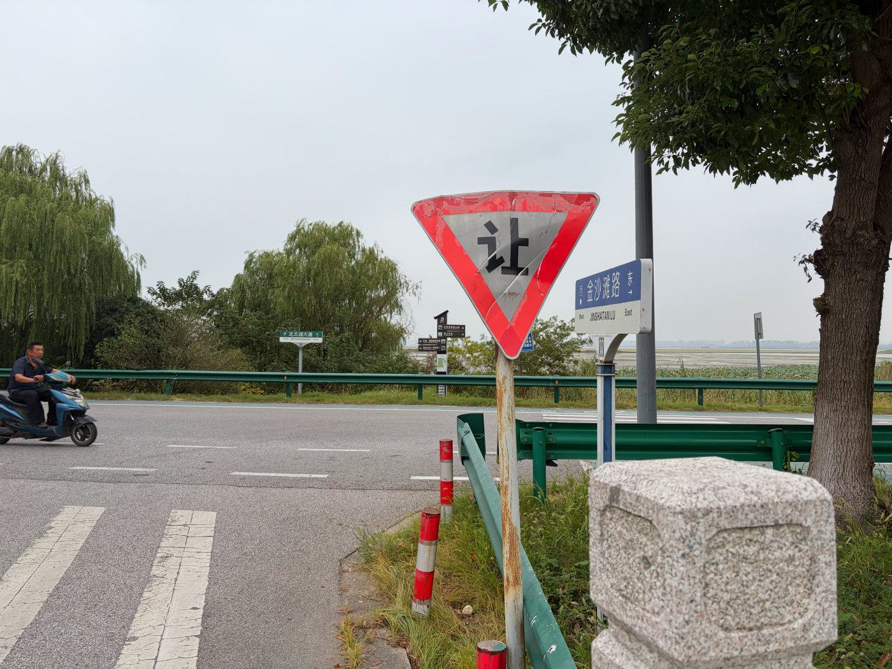
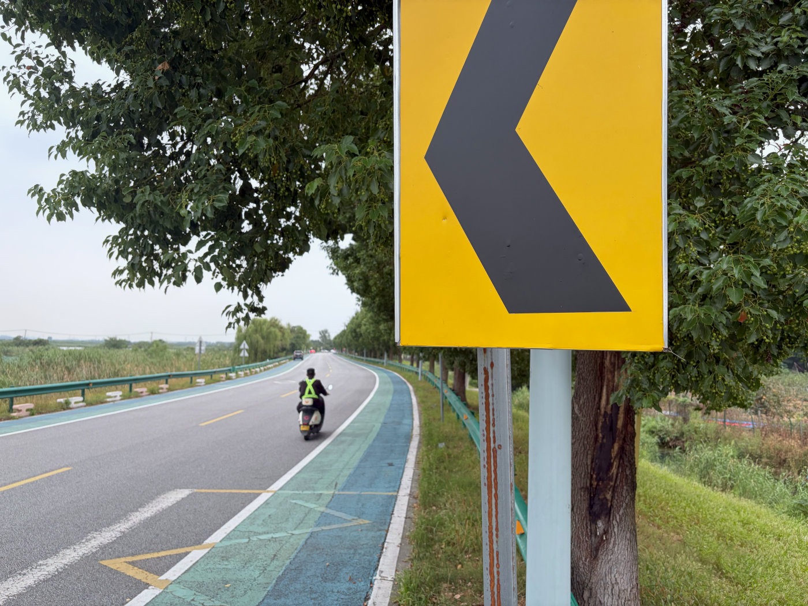
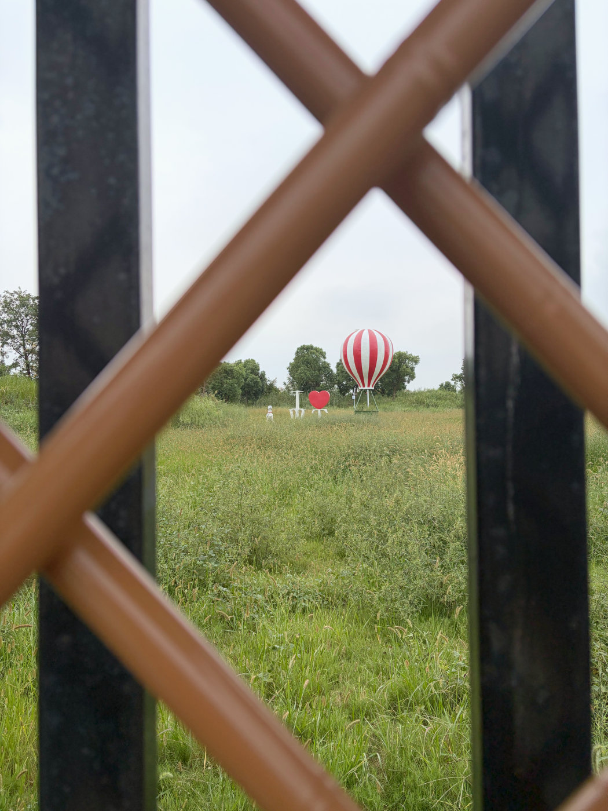
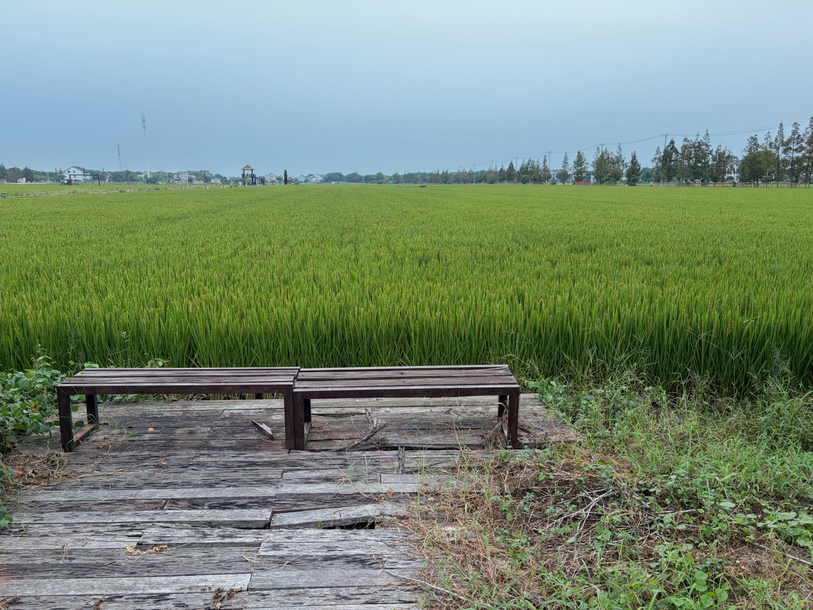
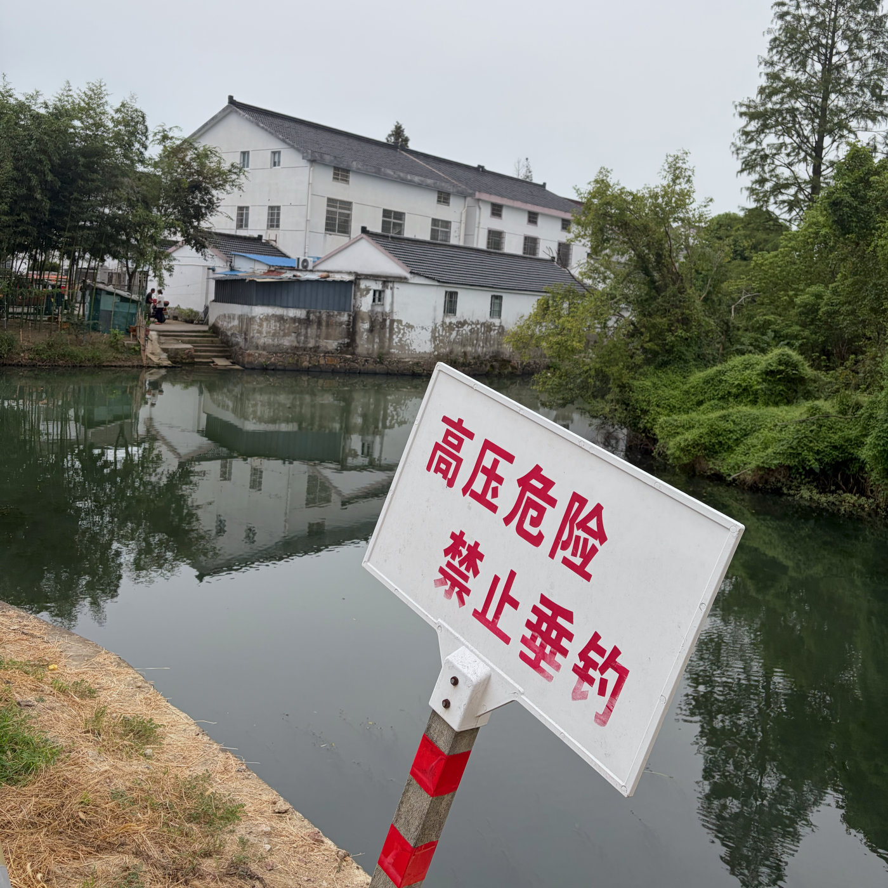
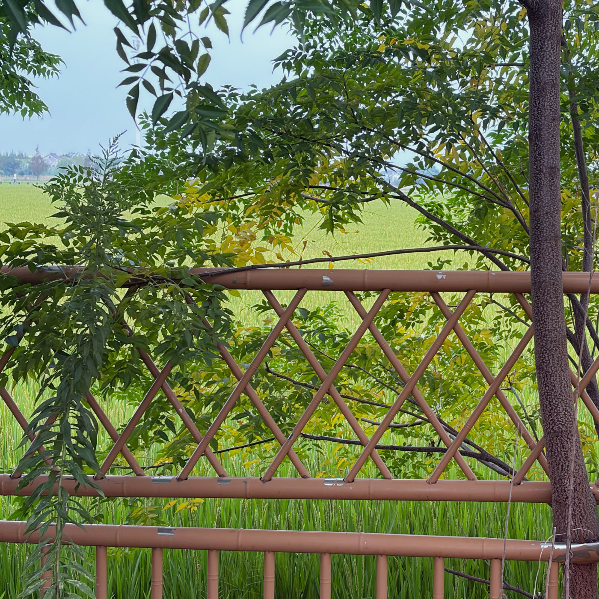

Continuing from the previous photo walk, I reached Renxiang just as my camera battery ran out.
This was an impromptu photo walk—I had simply picked up my camera and headed out, without bringing a spare battery. At that point, I could either call it a day and head back, or carry on taking photos with my phone.
It was a reminder that the Rx1RM2 battery really does not last long. I’ll make sure to bring a spare next time.

穿过仁巷，就能直达太湖边的北太湖大道了。Walk through Renxiang and you’ll come right out on North Taihu Avenue, by the lake.

北太湖大道的沿湖风景。A lakeside view along North Taihu Avenue.

从仁巷返回途中，遇到一座废弃农庄。从紧锁的铁门望进去，还能看到一些残留的布景。On the way back from Renxiang, I came across an abandoned farmstead. Through the locked gate, I could still see remnants of its old set dressing.

空置的长凳与辽阔的稻田。An empty bench beside a wide stretch of rice fields.

乡村河道密集，经常看到这类警示牌。The countryside is crisscrossed by waterways, and signs like this are a familiar sight.

还是免不了俗一把，这稻田边的嫩绿叶子真是太美了。I couldn’t resist another cliché—the fresh green leaves by the rice field were simply beautiful.